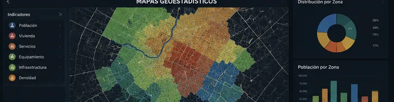

DESARROLLO
URBANO
Planeación y ordenamiento inteligente del medio urbano para garantizar la cobertura eficiente de servicios públicos.
Inteligencia territorial para ciudades inteligentes y sostenibles
La administración y gobernanza de los centros urbanos actuales exige una planeación estratégica y un ordenamiento eficiente de los entornos físicos, económicos, sociales y ambientales. En BIG-i, desarrollamos estudios de vanguardia y soluciones tecnológicas avanzadas que sirven de soporte técnico a la gestión del territorio, optimizan la recaudación fiscal y garantizan la continuidad, cobertura y calidad en la prestación de los servicios públicos.
Transformamos la gestión pública
Planificación urbana, modernización catastral y gestión pública a través de herramientas de inclusión tecnológica inteligente y Sistemas de Información Geográfica —SIG— de última generación. Transformamos la gestión pública con soluciones precisas.
Planes y Programas de Desarrollo Urbano
Elaboración y actualización de instrumentos normativos para el ordenamiento territorial a nivel municipal, metropolitano y estatal.
Modelación de Cobertura de Servicios Públicos
Análisis geoespacial de redes de agua potable, alcantarillado, alumbrado, recolección de residuos y transporte para identificar zonas de atención prioritaria.
Modernización Catastral Integrada
Reestructuración de la cartografía propiedad por propiedad, vinculación multifinalitaria de datos fiscales y jurídicos, e implementación de sistemas de información geográfica catastral.
Estudios de Viabilidad y Diagnóstico Socioeconómico
Evaluación de la dinámica urbana, densificación, uso de suelo y plusvalía para el diseño de políticas públicas habitacionales y comerciales.
Soluciones Integrales
Nuestros servicios están diseñados para responder a las demandas operativas y normativas de gobiernos, desarrolladores y especialistas del entorno urbano.
Gobiernos
Fortalecimiento de las finanzas públicas mediante la optimización de ingresos propios y planeación del crecimiento urbano.
Desarrolladores Inmobiliarios
Estudios de factibilidad de servicios, análisis de impacto urbano, estudios de movilidad y dictámenes de uso de suelo.
Empresas de Servicios Públicos
Diseño y optimización de rutas, modelación de redes de distribución y georreferenciación de infraestructura urbana existente.
Agencias de Movilidad y Transporte
Estudios de origen-destino, planeación de rutas de transporte público y diseño de infraestructura vial sostenible y peatonal.
Banca de Desarrollo y Consultorías
Análisis de riesgo urbano, evaluación de proyectos de infraestructura pública y dictaminación técnica de fondos metropolitanos.
Centros de Operación y Monitoreo Urbano
Arquitectura de datos para centros de control municipal, integrando metodologías de Gobernanza 4.0 y plataformas Smart City.
Evidencia Visual
Proyectos, diagnósticos y levantamientos territoriales.

¿Interesado en este estudio?
Contáctanos para estructurar un diagnóstico territorial personalizado y optimizar el desarrollo de tu proyecto urbano.